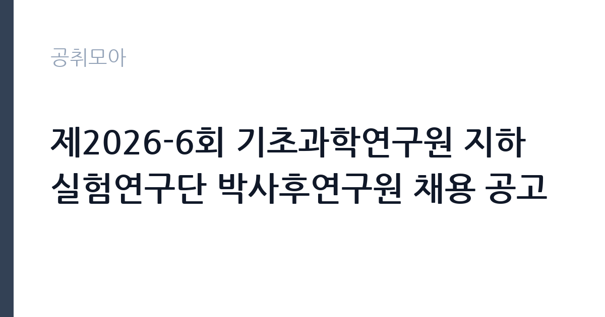

[공공기관] 제2026-6회 기초과학연구원 지하실험연구단 박사후연구원 채용 공고
기초과학연구원 · 대전 · 마감 2026-11-06 (D-26) · 출처 잡알리오

한눈에 보는 모집 조건
| 기관 | 기초과학연구원 |
|---|---|
| 공고명 | 제2026-6회 기초과학연구원 지하실험연구단 박사후연구원 채용 공고 |
| 고용형태 | 정규직 |
| 근무지 | 대전 |
| 게시일 | 2026-10-12 |
| 마감일 | 2026-11-06 (D-26) |
지원자격, 이렇게 읽으세요
- 공공기관 채용공시
- 세부 조건은 원문 공고문 확인
모집분야별 지원자격의 세부 내용은 공고문에서 확인해야 하며, 공통 응시자격으로 국가공무원법상 임용 결격사유가 없어야 하고, 부패방지법상 비위면직자에 해당하지 않아야 하며, 해외여행에 결격사유가 없어야 합니다. 남자는 병역을 마쳤거나 면제되어야 하고, 전문연구요원 지원 가능 공고인 경우 전직자에 한해 지원이 가능합니다. 박사후연구원은 학위 취득 후 5년 이내가 일반적인 기준이므로 원문에서 대조하십시오.
이 공고의 포인트
이 공고의 가치는 연구 주제 그 자체입니다. 지하실험연구단은 강원 정선의 예미랩에서 우주입자연구시설을 운영하며 암흑물질 직접 탐색에 도전하는 국내 대표 팀입니다. 박사후연구원으로서 대형 실험에 참여하면 논문과 연구 네트워크라는 확실한 커리어 자산이 남습니다. 초임계약 2년 후 1회 재계약으로 최대 3년까지 근무할 수 있어, 박사후 과정의 안정성도 갖춘 구조입니다.
전형은 어떻게 진행되나
IBS 채용 홈페이지를 통해 원서를 접수합니다. 서류심사와 발표심사, 면접심사를 거쳐 최종 합격자를 선발하는 것이 IBS 연구직 채용의 일반적인 흐름입니다. 연구실적과 연구계획서가 심사의 중심이 되므로, 본인의 논문과 이번 연구단 과제와의 연결을 분명히 보여주셔야 합니다. 단계별 일정은 원문 공고문에서 확인하십시오.
원문에서 확인한 전형 방식
ㅇ 채용공고문에서 제시한 지원자격을 충족하는 자 - 모집분야별 지원자격 등 세부 내용은 공고문 참고 [응시자격 공통] ㅇ「국가공무원법」제33조 및 연구원 규정에 의한 임용 결격사유가 없는 자 ㅇ「부패방지 및 국민권익위원회의 설치와 운영에 관한 법률」제82조에 따른 비위면직자에 해당하지 않는 자 ㅇ 해외여행에 결격사유가 없는 자로 남자의 경우 병역필 또는 면제자 - 전문연구요원 지원 가능 공고인 경우, 전직자에 한해 지원 가능 ㅇ 응시서류접수 마감일 기준 지원자격 충족자
이런 분께 추천해요
- 입자물리나 천체물리, 검출기 관련 분야 박사학위 소지자입니다. 암흑물질 탐색 실험과의 전공 fit이 곧 경쟁력입니다.
- 대형 국제협력 실험 참여 경험을 쌓고 싶은 박사후 과정 연구자입니다. 예미랩 실험은 세계적 네트워크로 이어집니다.
- 대전 본원과 정선 예미랩을 오가는 연구 생활이 가능한 분입니다. 지하실험시설 특유의 근무 환경을 이해하고 지원하는 분에게 맞습니다.
지원 전 체크리스트
- 모집분야의 세부 지원자격과 우대사항을 원문 공고문에서 확인하셨습니까.
- 박사학위 증명과 연구실적 목록, 연구계획서를 모두 준비하셨습니까.
- 전문연구요원 해당 여부와 병역 사항을 정리하셨습니까.
- 접수 마감일인 11월 6일 전에 온라인 접수를 마치실 수 있습니까.
모집 일정과 제출 타이밍
공고 게시일은 2026년 10월 12일이며 접수 마감은 11월 6일입니다. 3주 이상의 접수 기간이라 연구계획서를 다듬을 시간이 있으나, 추천서처럼 외부 협조가 필요한 서류는 early하게 요청하십시오. 임용 예정일과 협의 가능 여부는 원문 공고문에서 확인하시기를 권합니다.
직무 이해하기: 공공기관
지하실험연구단은 지하 1,000미터 예미랩에서 우주선 차폐 환경을 활용해 암흑물질과 중성미자, 희귀핵붕괴를 탐색하는 연구단입니다. 박사후연구원은 검출기 운영과 데이터 분석, 논문 작성을 맡으며, 국제 공동연구진과의 협업이 일상입니다. 대전 본원의 분석 업무와 예미랩 현장 실험을 병행하는 연구 생활이 됩니다.
자기소개서 작성 팁
연구계획서는 본인의 박사 연구와 지하실험연구단 과제의 접점을 중심으로 쓰십시오. 검출기나 데이터 분석 경험을 구체적인 기법과 함께 서술하시고, 입단 후 2년 안에 기여할 연구 목표를 명시하십시오. 대표 논문의 본인 기여도를 투명하게 밝히는 것이 신뢰를 얻습니다.
면접 준비 포인트
면접에서는 발표심사를 통해 연구 내용과 향후 계획을 평가합니다. 본인 연구의 학문적 의의와 실험 기여 방안을 질의응답에서 명확히 설명할 수 있게 준비하시고, 연구단 운영진과의 협업 방식에 대한 질문도 예상하십시오.
급여·근무조건 읽는 법
IBS 박사후연구원의 연봉은 5,500만원 이상으로 안내된 바 있으며, 연구원 내규의 pay-band가 적용됩니다. 성과급과 복지카드, 본원 기숙사와 어린이집 같은 복지가 제공되는 것이 IBS 채용 공고의 관례였습니다. 정확한 초임 연봉과 계약 조건은 이번 공고문의 채용조건에서 확인하셔야 합니다.
자주 묻는 질문
- 박사후연구원 계약은 최대 몇 년입니까?
초임계약 2년 후 1회에 한해 재계약이 가능하며, 박사후연구원은 최대 3년까지 근무할 수 있습니다. 재계약 시 연구실적 평가를 실시하므로 꾸준한 성과가 필요합니다. - 근무지는 어디입니까?
지하실험연구단은 대전 본원과 정선 예미랩에서 연구를 수행합니다. 모집분야별 근무지는 해당 공고문에서 확인하십시오. - 강의 의무가 있습니까?
IBS 연구직과 박사후연구원은 순수 연구직으로 강의 의무가 없습니다. 연구에만 전념할 수 있는 환경이라는 점이 대학 박사후 과정과의 차이입니다.
함께 보면 좋은 공고
[공공기관] 2026년도 한국임업진흥원 제3차 인재채용(보훈특별고용) 공고 — 마감 2026-11-02[공공기관] 2026년 제6차 국립생태원 기간제근로자(수탁과제) 채용 재공고 — 마감 2026-10-21[공공기관] 한전KDN(주) 대구본부 정보통신설비 유지보수 일용근로자 모집공고 — 마감 2026-10-26출처: 잡알리오 공개정보를 바탕으로 공취모아가 정리한 안내글입니다. 모집 조건·일정은 변경될 수 있으니 지원 전 반드시 원문 공고문을 확인하세요. 본 글은 정보 제공용이며 합격을 보장하지 않습니다.